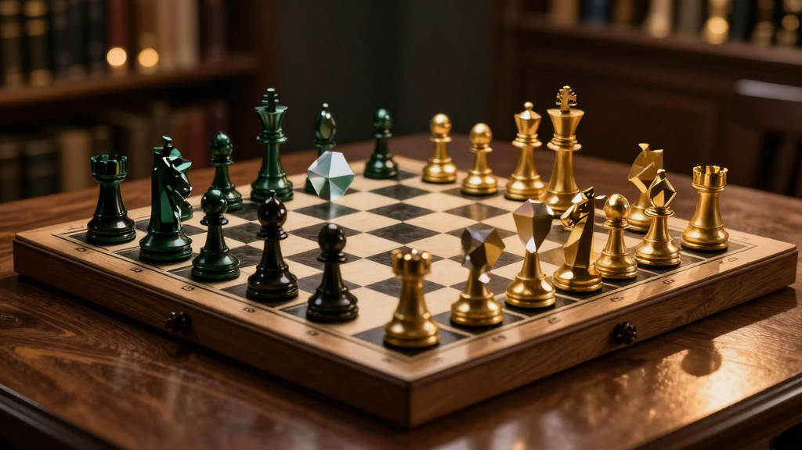
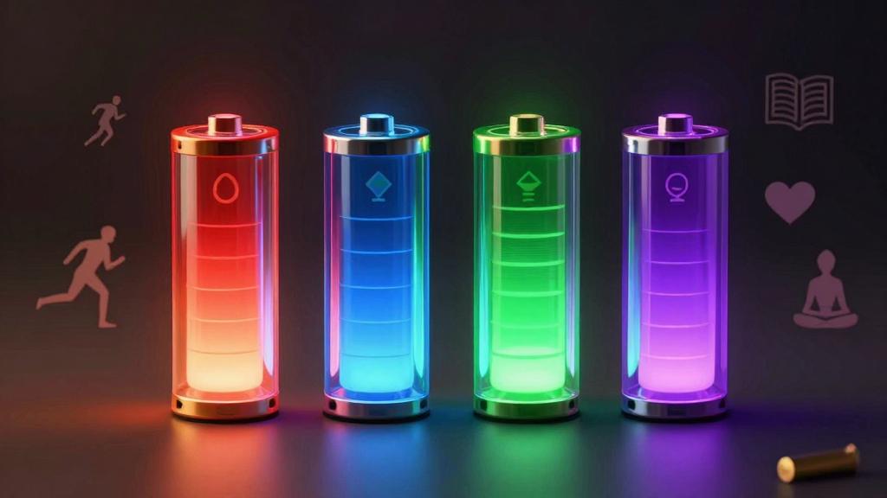
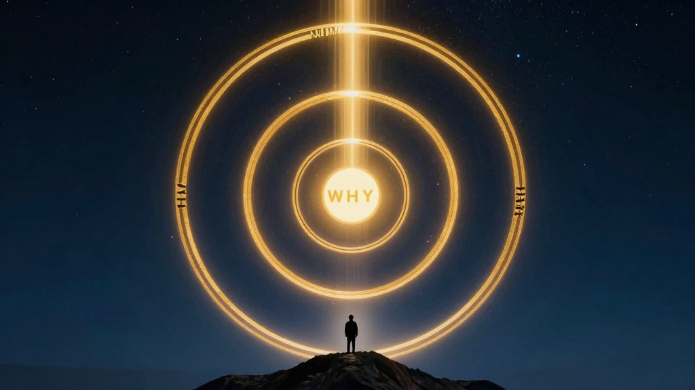

SAMBUNGAN / V2
WMB Digital
Melangkah Lebih Jauh
Dari Keutamaan ke Kejelasan, Dari Fokus ke Aliran, Dari Diri ke Impak
Baca Buku
Act 1
ACT 1
Melangkaui asas keutamaan — belajar seni berkata tidak, mengurus keputusan, dan berfikir dengan mental model untuk kejelasan hidup yang lebih tajam
Bab 1
Melangkaui Boundary Setting
"Maaf, saya tak boleh." — Tiga patah perkataan yang paling sukar diucapkan, tapi paling membebaskan.
Jam dah pukul 6.45 petang. awak baru nak masuk kereta, nak balik rumah, dah rancang nak masak dinner dan habiskan baki episode drama Netflix. Tiba-tiba telefon berbunyi. Group WhatsApp pejabat.
"Cikgu, boleh tolong settlekan laporan ni? Bos nak esok pagi."
Awak pandang skrin. Bukan tugas awak. Tapi orang yang minta tu kawan sepejabat. Baik. Dah lama kenal. Dan dia tahu awak pandai buat laporan.
Dalam kepala, suara bergaduh:
"Kata tak boleh la. Ni dah nak balik." Tapi suara lagi satu menengking: "Ehh, kesian la dia. Barang kali dia sesak. Lagipun, sekali-sekali tolong tak salah."
Akhirnya, awak menaip: "Ok saya settlekan."
Awak balik pukul 9 malam. Lauk dinner beli dekat gerak tepi jalan. Drama Netflix tak jadi tengok. Anak-anak dah tidur. Dan awak tidur dengan perasaan kosong: "Kenapa aku selalu sangat macam ni?"
Selamat datang ke dunia people-pleaser.
Dalam V1 buku ini, kita dah bincang tentang asas boundary setting — macam mana nak tetapkan had. Tapi V2 ni lebih dalam. Kita bukan sekadar nak belajar "cara kata tak boleh." Kita nak faham psikologi di sebalik setiap kali kita kata "ya" padahal hati berkata "tidak."
Greg McKeown, dalam Essentialism, menyebut satu perkara yang menusuk kalbu:
"If you don't prioritize your life, someone else will."
Kalau awak tak tentukan keutamaan hidup awak, orang lain akan tentukan untuk awak. Setiap kali awak kata "ya" pada permintaan orang lain tanpa berfikir, awak sebenarnya sedang menyerahkan remote control hidup awak kepada mereka.
Dalam konteks Malaysia, budaya kita sangat collectivist. Kita dibesarkan dengan nilai "muafakat," "tolong-menolong," "jaga hati orang." Zaman budak-budak, mak bapak ajar: "Kalau orang minta tolong, jangan kedekut." Zaman sekolah, guru ajar: "Kita kena bekerjasama." Zaman kerja, bos ajar: "Teamwork makes the dream work."
Semua nilai ni baik. Tapi masalahnya, kita tak pernah diajar bila dan macam mana nak tolak. Kita tak pernah diajar bahawa menjaga diri sendiri bukan mementingkan diri. Kita tak pernah sedar bahawa setiap kali kita tolong orang sampai kita sendiri terkorban, sebenarnya kita tak tolong sesiapa pun — kita cuma cipta resentment dalam diam.
McKeown mengajar kita satu prinsip penting: setiap "ya" ada kos. Bukan kos material, tapi kos peluang — opportunity cost.
Bila awak kata "ya" untuk:
Tapi kos paling besar? Identity cost.
Setiap kali awak kata "ya" padahal hati kata "tidak", awak hantar mesej pada diri sendiri: "Apa yang aku nak tak penting." Lama-kelamaan, awak hilang sentuhan dengan suara dalaman awak sendiri. Awak jadi orang yang sentiasa mengikut, sentiasa akur, sentiasa yes — walaupun dalam diam hati meronta.
Ada satu kajian oleh psikologi bernama Adam Grant tentang perbezaan antara givers dan takers dalam organisasi. Grant dapati bahawa givers — orang yang suka tolong — sebenarnya adalah prestasi paling rendah DAN paling tinggi dalam organisasi. Pelik kan?
Rupanya, ada dua jenis giver:
Yang membezakan mereka? Keupayaan untuk berkata tidak.
McKeown menulis: "If it isn't a clear yes, then it's a clear no."
Setiap keputusan ialah dua keputusan serentak:
Inilah yang dipanggil trade-off. Bila awak pilih satu, awak tinggalkan seratus yang lain. Dan inilah yang kita lari dari — kita nak semuanya. Kita nak tolong kawan, nak siapkan kerja sendiri, nak luangkan masa dengan keluarga, nak jaga kesihatan, nak ada hobi. Semua sekali gus.
Tapi hidup tak begitu. Hidup adalah siri trade-off.
Seorang pegawai kerajaan di Putrajaya, namakan dia Kamal. Setiap petang, Kamal akan duduk di meja dia, selesaikan kerja. Tapi setiap petang juga, akan ada orang datang: "Bang, tolong sign sikit." "Bang, tolong tengok ni." "Bang, bos panggil."
Kamal rasa dia kena layan semua sebab "itu pekerjaan saya." Tapi dia tak sedar: dengan melayan semua gangguan, dia sebenarnya sedang melakukan pekerjaan dia dengan teruk. Kerja sebenar dia — menganalisis dasar, menulis kertas cadangan — tertangguh. Kualiti merosot. Dan dia balik rumah pukul 8 malam setiap hari, penat mengadap.
Bila dia mula belajar berkata tidak — "Maaf, saya ada deadline. Boleh kita bincang esok?" — dia rasa bersalah pada mulanya. Tapi selepas seminggu, sesuatu yang menarik berlaku. Orang mula hargai masanya. Mereka datang dengan perkara yang betul-betul penting. Dan kerja Kamal — kerja sebenar — mula siap tepat pada masanya.
Bila awak hargai masa awak, orang lain pun akan hargai.
Mari kita buat satu latihan mudah. Tutup mata awak sekejap dan fikir:
5 orang yang paling banyak dapat "ya" dari awak dalam minggu ini.
Siapa?
Sekarang tanya: Antara mereka, siapa yang paling penting dalam hidup awak?
Kalau jawapan awak tak sama dengan senarai pertama, awak ada masalah. Ramai antara kita memberi paling banyak "ya" kepada orang yang paling kurang penting dalam hidup kita — dan paling sedikit "ya" kepada orang yang paling bermakna. Sebab apa? Sebab suara yang paling kuat dan paling mendesak selalunya bukan dari orang yang paling penting. Tapi dari yang paling demanding.
Boss minta sekarang. Client WhatsApp pukul 10 malam. Group chat tak henti berbunyi. Semua ni urgent — tapi belum tentu important.
McKeown dan beberapa pakar lain menawarkan beberapa cara untuk berkata tidak dengan hormat tanpa merosakkan hubungan. Ini ialah framework yang boleh guna dalam konteks Malaysia:
Jangan jawab "ya" atau "tidak" dengan segera. Ambil masa.
"Bagi saya check schedule dulu. Saya reply balik nanti."
Ini bagi awak masa untuk berfikir — betul ke nak buat ni? Atau rasa terdesak je sebab orang telefon tiba-tiba?
Psikologi Daniel Kahneman (kita akan bincang lebih dalam Bab 2) panggil ini System 2 thinking — berfikir secara perlahan dan rasional, bukan reaktif.
Kalau nak tolak, tapi tak nak terputus hubungan:
"Saya tak boleh siapkan hari ni, tapi mungkin saya boleh tengokkan esok pagi."
Atau
"Saya rasa Amin lebih sesuai untuk ni. Cuba tanya dia."
Satu kajian oleh psikologi dari Boston College mendapati bahawa orang yang guna frasa "I don't" lebih berjaya tolak godaan dari orang yang guna "I can't".
Kenapa? Sebab "I can't" bunyinya macam kekangan luar — kita tak mampu, terpaksa. Tapi "I don't" bunyinya macam identiti dan pilihan — ini bukan saya, ini bukan prinsip saya.
Cuba bandingkan:
Yang kedua lebih powerful. Bukan sebab tak mampu, tapi sebab awak buat pilihan sedar.
Orang akan cuba pujuk. Bersedialah.
"Betul la, tolong la..."
"Macam yang saya cakap tadi, saya dah fokus penuh pada projek lain."
"Sekali ni je..."
"Saya faham. Tapi saya tak boleh ubah pendirian saya untuk kali ni."
Jangan marah. Jangan defensif. Ulang dengan tenang.
"Terima kasih ingatkan saya. Saya hargai sangat peluang ni. Tapi saya kena tolak."
Ini penting dalam budaya Malaysia — jaga hati. Bila orang rasa dihargai, mereka lebih mudah terima penolakan.
Untuk betul-betul kuasai seni berkata tidak, awak kena buat satu amalan mingguan: audit semua "ya" awak.
Setiap hari Jumaat, luangkan 10 minit. Buka buku nota atau Notes dalam telefon. Tulis:
Senarai A: Semua "Ya" Minggu Ini
Senarai B: Semua "Ya" Yang Tak Patut Jadi "Ya"
Senarai C: Yang Mana Nak Tolak Minggu Depan
Dr. Vanessa Bohns, seorang profesor psikologi sosial di Cornell University, menjalankan kajian yang mendapati bahawa manusia sangat sukar berkata tidak — lebih sukar dari kita sangka. Dalam eksperimennya, peserta diminta membuat permintaan yang agak pelik kepada orang asing (macam "boleh tolong pinjamkan telefon?"). Hasilnya: 50% orang setuju, walaupun permintaan itu ganjil.
Kenapa? Sebab kita overestimate reaksi negatif orang bila kita tolak. Kita fikir orang akan marah, kecil hati, atau judge kita. Tapi kajian Bohns tunjuk: orang sebenarnya lebih faham dari kita sangka. Mereka takkan marah sangat pun.
Kebanyakan ketakutan kita untuk berkata "tidak" adalah dalam kepala kita sendiri.
Saya nak ulang ayat ni, sebab ia sangat penting:
Awak bukan bertanggungjawab atas perasaan orang lain bila awak jaga sempadan awak.
Kalau orang kecil hati sebab awak tolak permintaan dia, itu perasaan dia, bukan masalah awak. Awak tak boleh kawal perasaan orang. Awak hanya boleh kawal apa yang awak buat.
Seorang usahawan di Johor Bahru, panggil saja Anita, ada satu peraturan: dia tak pernah jawab panggilan telefon atau WhatsApp daripada client lepas pukul 7 malam. Pada mulanya, client complain. "Cik Anita susah dihubungi." Anita cuma jawab dengan senyuman: "Saya percaya pada work-life balance. Dan kalau ada emergency, encik boleh hantar email. Saya akan jawab pagi esok."
Selepas 3 bulan, client bukan setakat terima, tapi ramai yang respect dia lebih. Sebab apa? Sebab Anita tunjuk yang dia tetap pada prinsip. Dan orang respect orang yang ada prinsip, bukan yang sentiasa mengikut.
Satu lagi kemahiran penting dalam buku V2 ni: bezakan antara komitmen sebenar dan guilt trip.
Ada permintaan yang memang genuine — contohnya, mak ayah kita dah tua, perlukan bantuan. Atau anak kecil demam, kena jaga. Atau kerja yang memang tanggungjawab kita. Itu komitmen sebenar.
Tapi ada permintaan yang datang dengan guilt trip — benda yang sengaja atau tak sengaja buat kita rasa bersalah kalau tolak.
Contoh:
Ini adalah emotional manipulation — sedar atau tak sedar. Dan cara terbaik nak lawan guilt trip? Jangan ambil umpan.
Jawab dengan tenang: "Saya faham. Tapi saya tetap dengan keputusan saya."
Akhir kata untuk bab ini, mari kita fikirkan satu soalan yang paling penting:
Apa yang paling mahal yang awak bayar kerana selalu kata "ya"?
Mungkin jawapan awak:
Itulah kosnya. Dan ia jauh lebih mahal dari apa yang awak dapat dengan tolong orang.
McKeown ingatkan: "You cannot underestimate the power of a disciplined no." Jangan pandang remeh kuasa satu perkataan "tidak" yang diucapkan dengan sedar, penuh hormat, dan tegas.
"The difference between successful people and very successful people is that very successful people say 'no' to almost everything." — Warren Buffett
Bersambung ke Bab 2: Decision Fatigue — Kenapa Keputusan Kecil Memakan Tenaga Besar
Bab 2
Kenapa Keputusan Kecil Memakan Tenaga Besar
"Takkan nak fikir apa nak pakai pun boleh buat kita penat?" — Jawapannya: Ya. Dan sains buktikan.
Pagi hari Isnin. Jam 6.45 pagi. Awak berdiri di depan almari baju, mata masih separuh mengantuk. Dalam kepala, satu siri soalan bertalu-talu:
"Apa nak pakai hari ni? Baju biru ke baju putih? Yang biru ni dah pakai hari Khamis lepas, dah basuh ke belum? Hari ni ada meeting dengan bos besar — kena nampak profesional. Tapi malas sangat nak iron baju. Ah, pakai je baju hitam yang melepak kat kerusi tu..."
Lima belas minit berlalu. Awak masih berdiri. Sekarang jam 7 pagi.
"Ok, sarapan. Nak makan apa? Roti canai? Nasi lemak? Tapi nasi lemak makcik tu kadang-kadang berminyak sangat. Roti canai plak dah selalu sangat. Cereal? Malas nak susun sudu. Aaaah, apapun jadi la."
Lepas sarapan, jam 7.30 pagi. Awak masuk kereta. Lampu isyarat merah. Dalam masa 10 saat, otak buat keputusan: "Kalau LDP jam, aku exit Subang. Tapi kalau masuk Subang, kena piara tauke. Ataupun aku ikut Waze je..."
Awak tak sedar, dalam masa 30 minit sejak bangun tidur, otak awak dah buat lebih 20 keputusan. Ada yang remeh (baju apa?), ada yang sederhana (makan apa?), ada yang strategik (jalan mana?). Semua guna tenaga mental yang sama.
Dan bila sampai waktu tengah hari, awak dah letih — bukan sebab buat kerja berat, tapi sebab otak dah penuh dengan keputusan.
Inilah yang dipanggil Decision Fatigue.
Roy Baumeister, seorang psikologi sosial dari Florida State University, adalah antara saintis pertama yang mengkaji fenomena ini dengan serius. Dalam eksperimen terkenalnya pada tahun 1998, Baumeister membahagikan peserta kepada dua kumpulan.
Kumpulan A diletakkan dalam bilik yang berbau cookies bakar yang sedap. Mereka diberi pilihan: makan cookies atau makan lobak merah. Kumpulan B — kumpulan kawalan — diberi pilihan yang sama.
Kemudian, kedua-dua kumpulan diminta menyelesaikan teka-teki geometri yang sukar — sebenarnya teka-teki itu sengaja direka untuk mustahil diselesaikan.
Hasilnya? Kumpulan A (yang terpaksa menahan godaan cookies dan pilih lobak merah) menyerah 11 minit lebih cepat dari kumpulan B. Mereka dah guna tenaga mental untuk melawan godaan, maka bila sampai teka-teki, bateri dah tinggal separuh.
Baumeister panggil fenomena ni Ego Depletion — habisnya sumber mental untuk kawalan diri.
Sejak eksperimen tu, banyak lagi kajian mengesahkan dapatan yang sama:
Dalam konteks Malaysia, fikirkan:
Daniel Kahneman, dalam buku legendarisnya Thinking, Fast and Slow, menerangkan kenapa decision fatigue berlaku dengan memperkenalkan dua sistem dalam otak kita:
Masalahnya, kita fikir kita guna System 2 sepanjang hari. Tapi realitinya, kita guna System 1 untuk 95% keputusan harian kita.
Bila kita bangun pagi dan fikir "baju apa nak pakai", kita guna System 2. Tapi System 2 ni macam bateri telefon — terhad. Bila dah habis dipakai untuk 20 keputusan pagi, tenaga untuk buat keputusan besar petang nanti tinggal sikit.
Kita kata: "Saya kerja 10 jam hari ni." Tapi hakikatnya, 8 jam daripada tu adalah System 1 — balas email tanpa fikir, scroll, buat kerja rutin. Hanya 2 jam betul-betul System 2 — fikir strategi, buat keputusan besar, selesaikan masalah rumit.
Inilah kenapa Mark Zuckerberg, Steve Jobs, dan ramai CEO besar pakai baju yang sama setiap hari. Bukan sebab mereka takde style. Tapi sebab mereka nak jimatkan decision energy untuk perkara yang lebih penting.
Ini satu poin yang ramai tak sedar: keputusan untuk tidak membuat keputusan juga adalah keputusan — dan ia guna tenaga yang sama.
Bila awak tangguh nak sign kontrak tu — "Esokla fikir" — fikiran awak masih ligat memprosesnya di bawah sedar. Bila awak tangguh nak buat decision tentang tawaran kerja baru — "Nanti-nantila" — otak masih guna energi untuk holding pattern tu.
Ini macam buka banyak tab dalam Chrome. Setiap tab guna RAM. Bila tutup, RAM lega. Bila bukak je, RAM termakan. Sama dengan keputusan. Setiap keputusan yang tertangguh tetap guna tenaga mental.
Macam mana nak handle decision fatigue? Inilah beberapa strategi praktikal yang boleh guna:
Setiap orang ada peak hours masing-masing. Ada yang pagi-pagi lagi dah segar. Ada yang produktif lepas Isyak. Cari waktu puncak awak dan letak keputusan paling penting di situ.
Contoh: Kalau awak seorang akauntan, jangan buat pengiraan rumit lepas lunch. Buat waktu 9-11 pagi. Lepas lunch, guna untuk kerja rutin yang guna System 1 — balas email, isi borang, organize fail.
Zuckerberg dan Jobs pakai baju sama setiap hari? Tiru konsepnya:
Barry Schwartz, dalam bukunya The Paradox of Choice, menjelaskan: semakin banyak pilihan, semakin tinggi decision fatigue, dan semakin rendah kepuasan.
Dalam kajian klasiknya, Schwartz letak booth jem di sebuah pasaraya. Satu hari, booth ada 24 jenis jem. Hari lain, booth ada 6 jenis jem. Yang mana lebih laku?
Booth dengan 24 jenis lebih ramai pengunjung — orang berhenti, tengok, cuba rasa. Tapi booth dengan 6 jenis — orang lebih banyak beli. 30% pengunjung booth kecil membeli, berbanding hanya 3% untuk booth besar.
Terlalu banyak pilihan = lumpuh. Bila otak tak boleh nak decide, ia pilih tidak buat apa-apa. Atau buat pilihan impulsif yang tak rasional.
Aplikasi:
Tetapkan decision budget. Berapa banyak keputusan besar yang awak nak buat sehari? Mungkin 3. Lepas tu, rehatkan otak.
Satu teknik: "Eat the frog first" — buat keputusan paling sukar dan paling penting awal pagi. Mark Twain pernah cakap: "If you eat a live frog first thing in the morning, nothing worse will happen to you for the rest of the day."
Dalam programming, ada konsep default parameter — nilai yang automatik diguna kalau kita tak specify. Sama dengan hidup.
Cipta default untuk situasi berulang:
Decision fatigue bukan setakat di tempat kerja. Di rumah, ia sama dashyat.
Pernah tak dengar istilah "mental load" — beban mental yang kebanyakannya ditanggung oleh wanita dalam rumah tangga?
Isteri yang kena ingat:
Semua ni keputusan. Dan ia bertimbun. Dalam psikologi, ini dipanggil decision overload.
Dalam satu kajian oleh University of Texas, penyelidik mendapati bahawa golongan berpendapatan rendah lebih mudah terkena decision fatigue. Bukan sebab mereka kurang bijak, tapi sebab setiap keputusan kewangan — "Bayar bil air ke beli beras dulu?" — adalah keputusan high-stakes yang menguras tenaga mental.
Satu teknik yang saya suka: Teknik Pomodoro versi Decision Fatigue. Bukan 25 minit kerja, 5 minit rehat. Tapi:
Decision fatigue ni bukan satu konsep yang jauh — ia berlaku dalam hidup kita setiap hari. Setiap kali kita rasa "malas nak fikir" dan ambil jalan mudah — order Grabfood, scroll TikTok sejam, postpone decision besar — itu mungkin decision fatigue yang bercakap.
Tapi berita baiknya: kita boleh design hidup kita supaya kurang keputusan yang tak perlu. Bukan kurang autonomi, tapi kurang cognitive load. Bebaskan tenaga mental untuk perkara yang betul-betul penting.
"Guard your time and energy as your most valuable assets. Every decision you make costs you something. The question is only 'Is this decision worth the cost?'" — Greg McKeown, Essentialism
Bersambung ke Bab 3: Mental Models — Cara Berfikir Yang Mengubah Segalanya

Bab 3
Cara Berfikir Yang Mengubah Segalanya
"Kita tak nampak dunia macam mana ia adalah. Kita nampak dunia macam mana kita adalah." — Pemikiran kita adalah cermin, bukan tingkap.
Charlie Munger, pelabur legenda dan rakan kongsi Warren Buffett, adalah antara yang mempopularkan istilah "mental models." Menurut Munger, mental models adalah kerangka berfikir yang membantu kita memahami bagaimana dunia berfungsi. Setiap model adalah satu cara untuk melihat masalah daripada sudut yang berbeza.
Pendek kata: mental model adalah alat berfikir. Macam tukang kayu yang ada pelbagai alat — tukul, gergaji, pita ukur — setiap alat ada fungsi tersendiri. Begitu juga dengan mental model. Makin banyak model yang kita kuasai, makin baik kita dalam menyelesaikan masalah.
"A mental model is a compression of how something works. You can't keep everything in your head, so we wrap experiences into models." — Shane Parrish
Mental model adalah ringkasan bagaimana sesuatu berfungsi. Otak kita tak boleh simpan segala-galanya, jadi kita bungkus pengalaman menjadi model-model kecil yang boleh diguna semula.
Dalam bab ini, kita akan bincang 5 model mental yang paling relevan untuk membuat keputusan dan menentukan keutamaan dalam hidup:
Apa itu? First principles thinking adalah proses memecahkan masalah kompleks kepada elemen asas yang paling asas — the first principles — dan kemudian membina semula penyelesaian dari situ.
Apa itu? Inversion adalah teknik berfikir dari arah bertentangan. Daripada tanya "Macam mana nak berjaya?", tanya "Apa yang boleh buat aku gagal?" Kemudian, elakkan semua itu.
Apa itu? Second-order thinking adalah berfikir tentang kesan daripada kesan. Kalau kebanyakan orang berhenti di first-order consequences, second-order thinking pergi selangkah lagi — dan satu langkah lagi.
"Most problems are the result of solutions applied to previous problems." — Shane Parrish
Apa itu? Occam's Razor menyatakan: Entities should not be multiplied without necessity. Dalam Bahasa Melayu: Jangan tambah andaian tanpa sebab. Atau lebih praktikal: Penjelasan paling ringkas yang boleh terangkan semua fakta selalunya adalah yang betul.
Apa itu? Circle of Competence adalah konsep dari Warren Buffett dan Charlie Munger. Ia bermaksud: setiap orang ada bidang kepakaran masing-masing — "circle" di mana kita tahu lebih dari orang biasa.
"Knowing what you don't know is more useful than being brilliant." — Charlie Munger
Okay, kita dah ada 5 model mental. Macam mana nak guna semua dalam satu keputusan?
Katakan awak sedang fikir: "Patut tak saya berhenti kerja dan jadi content creator sepenuh masa?"
First Principles: Berhenti kerja = hilang pendapatan tetap. Jadi content creator = pendapatan tak menentu, tapi potensi tinggi. Elemen asas: pendapatan, masa, minat, risiko.
Inversion: Apa yang boleh buat saya gagal sebagai content creator? Tak konsisten buat content. Tak faham monetisasi. Content tak selesaikan masalah orang. Tak ada simpanan kewangan.
Second-Order Thinking: First-order: Best, kerja ikut suka, takde bos. Second-order: Hilang struktur harian. Pendapatan tak menentu. Stress cari client.
Occam's Razor: Awak dah buktikan belum yang content awak boleh hasilkan pendapatan tetap? Kalau belum, jangan berhenti kerja.
Circle of Competence: Adakah pembuatan content dalam circle of competence awak? Kalau baru, start side dulu.
Kita tak boleh kuasai semua 100+ mental models dalam seminggu. Tapi kita boleh mula dengan 5 ni. Bila dah biasa, tambah lagi.
Contoh:
Makin banyak model yang kita kuasai, makin baik kita dalam membuat keputusan yang sukar, menentukan keutamaan dengan yakin, memahami situasi dengan lebih jelas, dan mengelak kesilapan bodoh. Tapi ingat: mental model hanyalah alat. Mulakan dengan satu model. Guna untuk satu keputusan minggu ni.
"The first principle is that you must not fool yourself — and you are the easiest person to fool." — Richard Feynman
Bersambung ke Bab 4: Flow State — Melangkaui Deep Work
Act 2
ACT 2
Melangkaui deep work — capai flow state, urus tenaga, declutter digital, dan belajar delegasi untuk produktiviti mampan
Bab 4
Melangkaui Deep Work
Ghazali merenung skrin komputernya. Jam menunjukkan pukul 2:47 pagi. Dia dah mula kerja sejak pukul 9 pagi tadi — rehat sejam untuk solat dan makan — tapi kerja-kerja untuk presentation proposal besar esok masih belum siap. Peliknya, dari pukul 9 pagi hingga 6 petang, dia hanya berjaya siapkan satu slide. Tapi sejak pukul 12 tengah malam tadi, entah bagaimana, dia dah siapkan 25 slide.
Pernah tak anda rasa macam ni?
Inilah yang Csikszentmihalyi panggil Flow State.
Mihaly Csikszentmihalyi, seorang psikolog dari Hungary, menemui satu fenomena menarik semasa mengkaji artis, atlet, dan saintis. Beliau perhatikan bahawa orang-orang ini sering mengalami satu keadaan di mana mereka tenggelam sepenuhnya dalam apa yang mereka lakukan. Masa terasa berhenti. Tindakan dan kesedaran bergabung.
Ramai orang silap faham flow dengan "fokus." Fokus itu sekadar sebahagian kecil dari flow. Tapi dalam flow? Kita benar-benar hilang dalam kerja. Bunyi luar tak sampai. Lapar pun tak terasa. Ego kita senyap.
M — Matlamat Mikro
A — Alatan Minimal
L — Lawan Multitasking
A — Anchor Ritual
Y — Yakin dengan Kemahiran
S — Satu pada Satu Masa
I — Imbuhan Dopamine
A — Audit Setiap Minggu
Malaysia ada cabaran unik untuk flow. Panas dan lembap boleh buat kita lesu. Bunyi bising — dari motorsikal lalu lalang, azan dari surau sebelah — semua ni mengganggu tumpuan. Seorang penulis bebas di Ipoh — Amin — menggunakan jam 5 pagi hingga 8 pagi untuk menulis. Idea dia mudah: cari waktu emas anda.
Flow mengajar kita satu perkara penting: produktiviti bukan tentang berapa lama kita bekerja, tapi seberapa dalam kita bekerja.
Bayangkan jika setiap hari kita boleh luangkan 2-3 jam dalam flow state. Kerja yang rasa berat menjadi ringan. Mulakan dengan satu perubahan kecil esok pagi.
"The best moments in our lives are not the passive, receptive, relaxing times... The best moments usually occur if a person's body or mind is stretched to its limits in a voluntary effort to accomplish something difficult and worthwhile." — Mihaly Csikszentmihalyi, Flow: The Psychology of Optimal Experience
Bersambung ke Bab 5: Energy Management

Bab 5
Bukan Masa Yang Terhad, Tenaga Yang Terhad
Azman — seorang eksekutif perbankan di Kuala Lumpur — dulu percaya bahawa kunci produktiviti adalah masa. Tapi hasilnya? Dia burnout dalam masa 6 bulan. Kita sangka masalah kita adalah "tak cukup masa." Tapi sebenarnya, masalah kita adalah tak cukup tenaga.
Realitinya: satu jam bekerja pada pukul 10 pagi bila anda segar bugar, nilainya jauh berbeza dengan satu jam bekerja pada pukul 3 petang bila anda mengantuk. Jim Loehr dan Tony Schwartz dalam buku mereka The Power of Full Engagement (2003) membuat satu hujah: "Bukan masa yang terhad. Tenaga yang terhad."
Ini yang paling basic, tapi paling ramai orang remehkan. Tenaga fizikal datang dari tidur yang cukup, pemakanan yang betul, dan senaman.
Pernah tak anda bangun pagi dengan mood yang baik, tapi lepas dapat whatsapp marah dari bos, terus hari anda hancur? Cara memulihkan tenaga emosi: masa dengan orang positif, aktiviti yang memberi kegembiraan, dan memaafkan.
Setiap hari, kita ada satu kuantiti tetap tenaga mental. Cara jimat: automasi keputusan kecil, buat keputusan penting di waktu puncak, kurangkan multitasking.
Ini dimensi yang paling jarang dibincangkan, tapi paling penting. Tenaga spiritual bukanlah tentang agama semata-mata. Ia adalah tujuan hidup — kenapa kita bangun pagi.
Satu lagi konsep penting dari Loehr dan Schwartz ialah oscillate — gerak antara penggunaan tenaga dan pemulihan tenaga. Guna prinsip ultradian rhythm: 90-120 minit kerja, 15-20 minit rehat.
T — Tidur Berkualiti (7-8 jam)
E — Eat Smart (protein, lemak sihat)
N — Niat dan Nilai (tanya "kenapa")
A — Aktif Setiap Hari (20 minit senaman)
G — Guna Ultradian Rhythm (blok 90 minit)
A — Audit Tenaga (catat setiap hari)
Anda takkan siapkan lebih banyak kerja dengan bekerja lebih jam. Anda akan siapkan lebih banyak kerja dengan mempunyai lebih tenaga.
"Energy, not time, is the fundamental currency of high performance." — Jim Loehr & Tony Schwartz, The Power of Full Engagement
Bersambung ke Bab 6: Digital Minimalism
Bab 6
Declutter Kehidupan Digital
Kita hidup dalam era di mana perhatian kita telah menjadi komoditi. Syarikat teknologi terbesar di dunia berlumba-lumba untuk merebut perhatian kita. Dan model perniagaan mereka mudah: lebih lama kita di skrin, lebih banyak duit mereka dapat.
Cal Newport, dalam bukunya Digital Minimalism (2019), membuat satu pemerhatian yang tajam: teknologi digital bukan sekadar "alat neutral" yang kita guna. Ia direka khas untuk membuat kita ketagih — melalui dopamine-driven feedback loop.
Selama 30 hari, berhenti menggunakan teknologi yang "optional" — media sosial, aplikasi hiburan, browsing tanpa tujuan.
Isi masa kosong dengan aktiviti berkualiti tinggi: baca buku fizikal, aktiviti luar, hobi bermakna, hubungan bersemuka.
Perkenalkan semula teknologi dengan niat yang jelas, masa yang terhad, dan cara yang spesifik.
Dopamine fasting adalah tentang mengurangkan rangsangan dopamine murah — dari aktiviti pasif seperti scrolling — supaya otak kita sensitif semula kepada dopamine dari aktiviti bermakna.
T — Tanya "Kenapa?" setiap kali
E — Eliminate Notifications
K — Kategorikan Gunaan
N — No Phone First Hour
O — Off Day Setiap Minggu
L — Lokasi untuk Gajet
O — Optimalkan untuk Fokus
G — Guna Versi Desktop
I — Istiqamah pada Peraturan
Sebelum kita boleh fokus pada keutamaan kita, kita perlu bersihkan dahulu gangguan digital yang mengambil ruang mental kita. Mulakan dengan satu langkah: pilih satu aplikasi yang paling banyak membuang masa anda. Padamkannya untuk 30 hari.
"The key to thriving in a culture of digital noise is not to swear off technology entirely, but to be more intentional about how we use it — to embrace a philosophy of digital minimalism." — Cal Newport, Digital Minimalism
Bersambung ke Bab 7: Seni Delegasi
Bab 7
Cara Lepaskan Kerja Tanpa Lepaskan Kualiti
"Lagipun, lagi senang abang buat sendiri daripada nak ajar orang," Izzat selalu berkata. Ini panggilan Superhero Syndrome — sindrom nak buat semua seorang diri.
Dan Martell memperkenalkan satu konsep: setiap jam anda mempunyai nilai kewangan. Kalau ada tugas yang boleh dilakukan oleh orang lain dengan bayaran yang lebih rendah dari nilai masa anda per jam, maka anda patut bayar orang lain untuk buat tugas tu.
Langkah 1: Dokumentasi sebelum delegasi. Tulis langkah demi langkah.
Langkah 2: Latihan dan pengawasan — saya buat awak tengok, kita buat sama-sama, awak buat saya tengok, awak buat sendiri.
Langkah 3: Komunikasi jelas — Apa, Kenapa, Bila, Bagaimana, Siapa.
Langkah 4: Checkpoints, bukan micromanage.
Langkah 5: Terima ketidaksempurnaan — latihan adalah pelaburan.
| Doer | Leader |
|---|---|
| Bangga siapkan sendiri | Bangga lihat orang lain siapkan |
| Buktikan melalui kerja tangan | Buktikan melalui sistem dan pasukan |
| Kata "saya dah siap" | Kata "pasukan saya dah siap" |
| Fokus pada tugas | Fokus pada hala tuju |
| Kerja lebih jam | Kerja lebih bijak |
Delegasi bukanlah tentang "suruh orang buat kerja kita." Ia tentang membina sistem yang membolehkan kita mencapai potensi maksimum. Mulakan esok dengan satu tugas: pilih satu tugas kecil, tulis SOP ringkas, dan serahkan kepada orang yang sesuai.
"The most important thing you can do to increase your impact is to stop doing things that others can do — so you can focus on what only you can do." — Dan Martell, Buy Back Your Time
Bersambung ke Bab 8: Start With Why
Act 3
ACT 3
Temui tujuan hidup, kuasai perbualan sukar, jadilah antifragile, fikirkan legasi, dan laksanakan pelan 100 hari untuk mengubah ilmu menjadi tindakan nyata

Bab 8
Tujuan Sebagai Pemangkin Tindakan
Berapa ramai antara kita yang bangun pagi, pergi kerja, siapkan tugas — tapi lupa kenapa kita buat semua tu?
Simon Sinek dalam bukunya Start With Why (2009) memperkenalkan The Golden Circle:
Sinek kata: "People don't buy WHAT you do, they buy WHY you do it."
Bila kau ada tujuan yang jelas, kau tak perlukan disiplin gila-gila. Tujuan tu sendiri jadi bahan api.
Bila kau jelas dengan WHY kau, keputusan jadi lebih mudah. Kau cuma tanya: "Adakah pilihan ni selari dengan tujuan aku?"
Bila kau jujur dengan apa yang kau percaya, orang yang sehaluan akan datang dekat. Inilah efek magnet.
Fikir balik hidup kau. Bila dalam hidup aku, aku rasa paling hidup?
Tulis 10 pengalaman paling bermakna dan cari tema yang muncul.
Formula: "Saya nak GUNA [kebolehan aku] untuk MEMBERI [impak tertentu] supaya [hasil akhir]."
Sinek kata: "WHAT you do is the proof of WHY you exist."
Tanpa WHY, kau akan hidup ikut arus dan sampai hujung nyawa menyesal. Dengan WHY, kau akan tahu mana nak fokus dan ada tenaga walau dalam cabaran.
"There are only two ways to influence human behavior: you can manipulate it, or you can inspire it." — Simon Sinek, Start With Why
Bersambung ke Bab 9: Crucial Conversations
Bab 9
Bercakap Pasal Benda Sukar
Kita ada sesuatu yang sangat penting nak cakap dengan orang yang sangat penting dalam hidup kita. Tapi entah kenapa, kata-kata kita sampai macam pisau, atau langsung tak sampai. Inilah yang dipanggil Crucial Conversation.
Tiga ciri: Stakes are high (pertaruhan tinggi), Opinions vary (pendapat berbeza), Emotions run strong (emosi memuncak).
Bila crucial conversation tak dikendalikan, kita pilih: Diam dan telan (Silence) atau Meletup (Violence). Dua-dua tak menyelesaikan masalah.
Objektif utama crucial conversation: Bina kolam yang sebesar mungkin. Galakkan semua orang sumbang air masing-masing.
S — Share Your Facts (fakta, bukan cerita)
T — Tell Your Story (interpretasi kau terhadap fakta)
A — Ask for Their Path (jemput mereka kongsi)
T — Talk Tentatively (guna bahasa berlapik)
E — Encourage Testing (beri ruang untuk perbezaan pendapat)
Kita selalu salahkan perangai orang, tapi maafkan keadaan sendiri.
Pilihan palsu antara "cakap dan gaduh" atau "diam dan telan." Cari pilihan ketiga.
Bila emosi tinggi, otak depan tutup. Penyelesaian: Master your stories.
Perbualan yang sukar hari ini boleh menyelamatkan hubungan yang pahit esok hari.
"The Pool of Shared Meaning is the birthplace of synergy. The more you share, the better the decisions." — Patterson, Grenny, McMillan, Switzler, Crucial Conversations
Bersambung ke Bab 10: Antifragile
Bab 10
Jadi Lebih Kuat Dari Setiap Cabaran
Hidup pun macam tu. Ada orang — bila kena masalah, mereka hancur. Fragile. Ada orang — bila kena masalah, mereka tahan. Robust. Tapi ada satu golongan orang yang keluar lebih kuat dari setiap cabaran. Antifragile.
Fragile — mudah patah bila kena tekanan.
Robust — tahan tekanan, tak berubah.
Antifragile — semakin kuat bila kena tekanan.
Taleb kata: "Wind extinguishes a candle and energizes a fire." Kau nak jadi lilin atau api?
Bayangkan barbell. Dua hujung berat, tengah kosong.
Satu hujung: Sangat selamat, stabil, konservatif.
Hujung satu lagi: Sangat berisiko, eksperimental, agresif.
Tengah: Elakkan. Kosong.
Hujung selamat: Kerja tetap dengan gaji bulanan.
Hujung berisiko: Side hustle, bisnes kecil-kecilan.
Hujung selamat: 80-90% dalam ASB, Tabung Haji, emas.
Hujung berisiko: 10-20% dalam saham, pelaburan startup.
Dos kecil tekanan menguatkan sistem — macam vaksin.
Jangan letak semua telur dalam satu bakul. Jangan jadi "saya ni engineer je." Jadi "saya engineer, content creator, pelabur, ayah, dan penulis."
Keuntungan dari apa yang kita buang, bukan apa yang kita tambah. Kurang media sosial, kurang berhutang, kurang kawan toksik.
Pilihan ketiga — jadi antifragile — adalah yang paling susah, tapi paling berbaloi. Mulakan hari ni: satu tekanan yang kau lari — hadap. Satu optionality — guna. Satu benda toksik — buang.
"Antifragility is beyond resilience or robustness. The resilient resists shocks and stays the same; the antifragile gets better." — Nassim Nicholas Taleb, Antifragile
Bersambung ke Bab 11: Legacy Thinking
Bab 11
Apa Yang Kau Nak Tinggalkan?
"Tok Wan bukan kaya. Rumah atap. Kereta pun takde. Tapi dia ada satu kerja: setiap pagi, lebih 40 tahun, dia bancuh air kopi di surau. Nama dia Tok Wan. Tapi orang panggil dia Wak Kopi."
David Brooks dalam The Road to Character memperkenalkan perbezaan penting:
Resume Virtues — Nilai dalam CV: ijazah, pencapaian, jawatan, gaji.
Eulogy Virtues — Nilai yang disebut masa meninggal: baik hati, pemurah, penyayang.
Masalah Malaysia moden: Kita lebih fokus pada resume virtues. Tapi bila sampai hujung nyawa, semua tu tak dibawa mati.
Bila kau tahu apa yang kau nak tinggalkan, kau tahu apa nak pilih.
Dengan legasi sebagai utara, kau boleh tanya: "Adakah benda ni akan membina legasi aku?"
Legasi bukan bina dalam sehari. Ia dibina dalam tahun dan dekad. Tok Wan — 40 tahun bangun pagi bancuh kopi.
Apa yang mereka akan sebut? Siapa yang akan datang? Apa sumbangan kau pada dunia?
Keluarga? Agama? Kebebasan? Keadilan? Pendidikan?
Sasaran: "Nak jadi orang baik." Sistem: "Setiap malam, tulis satu kebaikan yang aku buat hari ni."
Satu projek untuk orang lain tanpa mengharap balasan.
Instant Gratification — Kita nak hasil cepat. Legasi lambat. Celebrate small wins.
Tekanan Ekonomi — Legasi tak semestinya besar. Tok Wan cuma bancuh kopi.
Apa yang paling utama? Bukan rumah besar. Bukan kereta laju. Bukan pangkat tinggi. Tapi siapa kau, dan apa yang kau tinggalkan dalam hati orang lain.
"The best way to find yourself is to lose yourself in the service of others." — Mahatma Gandhi
"In the end, it's not the years in your life that count. It's the life in your years." — Abraham Lincoln
Bersambung ke Bab 12: Pelan 100 Hari
Bab 12
Dari V1 ke V2, Dari Ilmu ke Tindakan
"Begin with the end in mind." — Stephen R. Covey
Awak dah sampai. Bab terakhir. Dua buku. Dua puluh empat bab. Berbelas jam membaca. Berpuluh idea, konsep, dan rangka kerja.
Tahniah. Tapi sekarang tiba saat yang paling penting. Ilmu tanpa tindakan hanyalah hiasan minda.
Hari 1-7: Decision Audit, Energy Audit, Digital Declutter langkah 1-2, refleksi.
Hari 8-14: Kenal pasti WHY, Mental Model Check, pilih 3 topik paling relevan, bina sistem tracking.
Deep Work block, amalkan mental model, satu sesi flow, praktik "kata tidak", energy recovery ritual, satu perbualan ditangguh, delegasi satu tugas.
Rutin pagi, sistem fokus, sistem tenaga, sistem hubungan dan komunikasi.
Ajar dan kongsi, projek impak, deepen the WHY, bina legasi kecil.
Menilai, meraikan, dan merancang semula. Survey dari orang rapat, pelan 100 hari seterusnya.
Satu perkara yang saya buat hari ni. Satu perkara yang saya belajar. Skor kepuasan 1-10.
Kemenangan minggu ni, halangan, satu fokus untuk minggu depan.
Cari sorang yang tahu apa yang awak cuba capai dan check-in setiap minggu.
Guna kalendar atau aplikasi tracker. Setiap hari awak buat tindakan, tandakan X.
Buku V2 tamat di sini. Tapi perjalanan awak tak tamat. Perjalanan sebenar baru bermula.
Buku hanyalah katalis. Tapi api hanya akan terus menyala kalau awak tambah bahan bakar — dan bahan bakar itu adalah tindakan harian, pembelajaran berterusan, dan komitmen pada proses.
Yang Mana Keutamaan?
Itu bukan tajuk buku semata-mata. Itu adalah soalan yang perlu awak tanya setiap hari. Setiap kali ada permintaan masuk. Setiap kali ada gangguan datang. Setiap kali ada pilihan perlu dibuat.
Yang mana keutamaan?
Buku V1 ajar awak asas. Buku V2 bawa awak lebih dalam. Tapi buku tak boleh hidup untuk awak. Ilmu tak boleh bertindak untuk awak. Pelan tak boleh lari untuk awak. Hanya awak yang boleh.
Perjalanan 100 hari bermula sekarang. Bukan esok. Bukan Isnin depan. Bukan tahun depan. Sekarang.
Saya doakan yang terbaik untuk perjalanan awak. Jumpa di V3, mungkin.
— WMB DIGITAL
Lampiran ini mengandungi template dan lembaran kerja yang disebut dalam buku. Fotokopi, cetak, atau salin ke dalam jurnal awak. Guna sekerap yang perlu — template ni bukan untuk simpan, tapi untuk guna.
Rujuk Bab 2 V2 — Decision Fatigue
Guna template ini selama SATU HARI penuh untuk rekod setiap keputusan yang awak buat.
Tarikh: _______________
| Masa | Keputusan | Kategori | Sedar/Autopilot | Tenaga (1-10) | Boleh di-automasi? |
|---|---|---|---|---|---|
| 7:00 pagi | Bangun atau tekan snooze | Rutin | Autopilot | 4 | Ya — letak alarm jauh |
| ... (sambung di helaian berasingan) ... | |||||
Analisis Selepas 24 Jam:
Rujuk Bab 8 V2 — Start With Why dan Bab 11 V1 — Prinsip dan Purpose
Tulis 3 tema utama yang muncul: ________
Format: Saya wujud untuk [tindakan], supaya [impak].
| Ujian | Soalan | Lulus/Gagal |
|---|---|---|
| Ujian Tulen | Adakah ini benar untuk saya? | |
| Ujian Tindakan | Adakah tindakan harian saya selari? | |
| Ujian Masa | Adakah masih relevan dalam 10 tahun? | |
| Ujian Emosi | Adakah ia buat saya rasa sesuatu? |
Rujuk Bab 12 — Pelan 100 Hari
Nama: ______________________________
Tarikh Mula: _______________ Tarikh Tamat: _______________
3 Topik Pilihan (dari 24 bab V1+V2):
WHY saya untuk 100 hari ini: _________________________________
Accountability Partner: ______________________________
Rujuk Bab 6 V2 — Digital Minimalism
Rujuk Bab 9 V2 — Crucial Conversations
| Langkah STATE | Apa Nak Buat |
|---|---|
| Share your facts | Fakta, bukan cerita |
| Tell your story | Cerita saya — dengan rendah hati |
| Ask for their path | Jemput mereka kongsi |
| Talk tentatively | Cakap dengan rendah hati |
| Encourage testing | Galakkan perbezaan pendapat |
| # | Tajuk | Penulis |
|---|---|---|
| 1 | Essentialism | Greg McKeown |
| 2 | Deep Work | Cal Newport |
| 3 | The ONE Thing | Gary Keller |
| 4 | The 7 Habits of Highly Effective People | Stephen R. Covey |
| 5 | Principle-Centered Leadership | Stephen R. Covey |
| 6 | The Power of Habit | Charles Duhigg |
| 7 | Atomic Habits | James Clear |
| 8 | Man's Search for Meaning | Viktor Frankl |
| 9 | The 4-Hour Workweek | Timothy Ferriss |
| 10 | First Things First | Stephen R. Covey |
| # | Tajuk | Penulis |
|---|---|---|
| 11 | Thinking, Fast and Slow | Daniel Kahneman |
| 12 | The Great Mental Models (Vol 1-4) | Shane Parrish |
| 13 | Flow: The Psychology of Optimal Experience | Mihaly Csikszentmihalyi |
| 14 | The Power of Full Engagement | Jim Loehr & Tony Schwartz |
| 15 | Digital Minimalism | Cal Newport |
| 16 | Dopamine Detox | Thibaut Meurisse |
| 17 | Buy Back Your Time | Dan Martell |
| 18 | Start With Why | Simon Sinek |
| 19 | Crucial Conversations | Patterson, Grenny, McMillan, Switzler |
| 20 | Antifragile | Nassim Nicholas Taleb |
| 21 | The Road to Character | David Brooks |
| 22 | The 8th Habit | Stephen R. Covey |
| # | Tajuk | Penulis |
|---|---|---|
| 23 | Meditations | Marcus Aurelius |
| 24 | Daring Greatly | Brené Brown |
| 25 | The War of Art | Steven Pressfield |
| 26 | So Good They Can't Ignore You | Cal Newport |
| 27 | The E-Myth Revisited | Michael Gerber |
| 28 | The Art of War | Sun Tzu |
| 29 | Never Split the Difference | Chris Voss |
| 30 | The Art of Thinking Clearly | Rolf Dobelli |
| 31 | The Obstacle Is the Way | Ryan Holiday |
| 32 | Ikigai | Garcia & Miralles |
| 33 | Sapiens | Yuval Noah Harari |
Nama: ______________________________
Tarikh: _______________
| Perkara | Kenapa Penting | Bila Saya Akan Mula |
|---|---|---|
| 1. ________ | ________ | ________ |
| 2. ________ | ________ | ________ |
| 3. ________ | ________ | ________ |
| Perkara | Kenapa Saya Nak Stop | Apa Yang Akan Saya Gantikan |
|---|---|---|
| 1. ________ | ________ | ________ |
| 2. ________ | ________ | ________ |
| 3. ________ | ________ | ________ |
| Perkara | Kenapa Saya Nak Teruskan | Macam Mana Nak Pastikan Konsisten |
|---|---|---|
| 1. ________ | ________ | ________ |
| 2. ________ | ________ | ________ |
| 3. ________ | ________ | ________ |
Saya, ______________________________, dengan ini berikrar untuk:
✅ MULAKAN perkara-perkara di atas — tanpa tunggu masa sesuai
✅ HENTIKAN perkara-perkara yang tak lagi berkhidmat untuk hidup saya
✅ TERUSKAN amalan baik yang sudah saya bina
Saya faham bahawa perubahan tidak berlaku dalam sehari. Saya faham akan ada hari saya gagal. Saya faham bahawa progress lebih penting dari perfection.
Tandatangan: ______________________________
Tarikh: _______________
Saksi (Accountability Partner): ______________________________
"The best time to plant a tree was 20 years ago. The second best time is now." — Peribahasa Cina
— WMB DIGITAL